Interaction model and parameters definition¶
One needs to define a tact_behav object with pre.tact_behav() which corresponds to an
interaction model with its parameters.
Example :
lcsas=pre.tact_behav(name='gapc0', law='MAC_CZM', dyfr=0., stfr=0., cn=4.e+14, ct=3.e+14, b=0., w=60.)
Various models are available. The contact detection computes some quantities as: local frame, initale gap 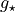, etc. Unkowns are relative velocity 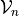, 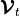 and contact reactions (impulse) 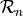, 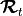.
Meaning of some parameters:
friction: either constant fric or stfr static and dyfr dynamic friction
restitution (newton): rstn normal, rstt tangential
cohesion: cohn normal, coht tangential (unused with wet model)
CZM parameters:
cn normal stiffness (pure mode I)
ct tangential stiffness (pure mode II)
s1 and s2 critical stress (pure mode I and pure mode II)
G1 and G2 fracture energy (pure mode I and pure mode II)
dp1 and dp2 plastic displacement for TH (dp1=s1/cn and dp2=s2/ct means triangles)
du1 and du2 rupture displacement (pure mode I and pure mode II) for ABP
phi ratio between micro and macro fracture energy for ABP
Furthermore some interaction have some internal variables (not managed
by the user) which needs a careful use of chipy.macro.StockRloc(),
chipy.macro.UpdateTactBehav(), chipy.macro.RecupRloc().
Here is a list of existing models with the expected parameters. Each model is described by a normal and a tangential part. Most models are rewritten, through change of variables, as a guenuine Signorini-Coulomb problem.
RIGID/RIGID :¶
IQS_CLB : fric (
 ).
).Normal : Signorini formulation with 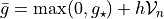 and 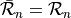.
Tangential : Coulomb formulation with 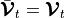 and 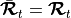
IQS_CLB_g0 : fric (
).
Normal : Signorini formulation with 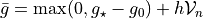 and .is the gap computed at the first step and stored as an internal variable.
Tangential : Coulomb formulation with andInternal variables : g_ref
IQS_DS_CLB : dyfr (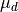), stfr (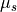).
Normal : Signorini formulation with and .
Tangential : Coulomb formulation with and .
The friction coefficient is depending on the contact status (be carefull 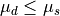) :
If status_begin == stick then 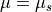
else 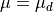
IQS_WET_DS_CLB : cohn (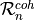), coht (not used), Wthk (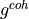), dyfr (), stfr ().
Normal : Signorini formulation with and
if 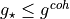 then 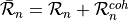
else .
Tangential : Coulomb formulation with and .
The friction coefficient is depending on the contact status:
if status_begin == stick then
else
IQS_MOHR_DS_CLB : cohn (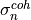), coht (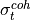), dyfr (), stfr ().
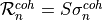, 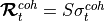, with 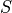 the contact surface computed during contact detection.
Normal : Signorini formulation with and
if status_begin == cohesive then
else .
Tangential : Coulomb formulation with and .
The friction coefficient is depending on the contact status:
if status_begin == cohesive then 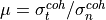
else
if status_begin == stick then
else
IQS_STICK :
Normal : Signorini formulation with and .
Tangential :
if 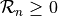 then such that 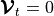
else
 and free
and freeRST_CLB : rstn (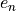), rstt (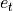), fric (
).if 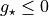 then
Normal : Signorini formulation with 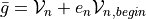 and .
Tangential : Coulomb formulation with 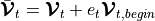 and
else
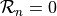 and
IQS_MAL_CZM : dyfr (), stfr (), cn, ct, s1, s2, G1, G2
IQS_TH_CZM : dyfr (), stfr (), cn, ct, s1, s2, G1, G2, dp1, dp2
IQS_ABP_CZM : dyfr (), stfr (), cn, ct, s1, s2, G1, G2, du1, du2, phi
IQS_EXPO_CZM : dyfr (), stfr (), cn, ct, s1, s2, G1, G2, eta
IQS_EXPO_CZM_SPRING : dyfr (), stfr (), cn, ct, s1, s2, G1, G2, eta, k1, k2
IQS_MAC_CZM: dyfr (), stfr (), cn, ct , b, w.
, , with the contact surface computed during contact detection.
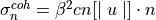 and 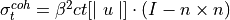
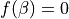
Normal : Signorini formulation with and .
Tangential : Coulomb formulation with and 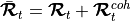
can depend on the damage parameterinternal variables : taille_ele,saut_de_ut,saut_de_un,[3D saut_de_us],beta,TPSini
any/DEFORMABLE :¶
GAP_SGR_CLB : fric
Normal : Signorini formulation with 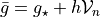 and .
Tangential : Coulomb formulation with and
GAP_SGR_CLB_g0 : fric
Normal : Signorini formulation with 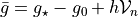 and .Tangential : Coulomb formulation with andInternal variables : g_ref
preGAP_SGR_CLB: pgap, fric
Internal variables : taille_ele,
GAP_SGR_STICK
Normal : Signorini formulation with and .
Tangential :
if then such that
else
and freeGAP_MOHR_DS_CLB : cohn (), coht (), dyfr (), stfr ().
, , with the contact surface computed during contact detection.
Normal : Signorini formulation with and
if status_begin == cohesive then
else .
Tangential : Coulomb formulation with and .
The friction coefficient is depending on the contact status:
if status_begin == cohesive then
else
if status_begin == stick then
else
VEL_SGR_CLB : fric
if then
Normal : Signorini formulation with 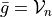 and .
Tangential : Coulomb formulation with and
else
and
MAL_CZM : dyfr, stfr, cn, ct, s1, s2, G1, G2
TH_CZM : dyfr, stfr, cn, ct, s1, s2, G1 , G2, dp1, dp2
ABP_CZM : dyfr, stfr, cn, ct, s1, s2, G1 , G2, du1, du2, phi
EXPO_CZM : dyfr, stfr, cn, ct, s1, s2, G1 , G2, eta
EXPO_CZM_SPRING : dyfr, stfr, cn, ct, s1, s2, G1 , G2, eta, k1, k2
MAC_CZM : dyfr, stfr, cn, ct, b, w
MP_CZM : dyfr, stfr, cn, ct, p, p0, w
MP3_CZM: dyfr, stfr, cn, ct, p, p0, smax, w
MP3_CZM_THER : dyfr, stfr, cn, ct, p, p0, smax, w, lambdas, lambdac
POINT/POINT:¶
ELASTIC_WIRE: stiffness, prestrain
BRITTLE_ELASTIC_WIRE : stiffness, prestrain, Fmax
ELASTIC_ROD : stiffness, prestrain
VOIGT_ROD : stiffness, prestrain, viscosity
NARD_ROD : E, nu, s1, s2
any/any:¶
COUPLED_DOF :
NORMAL_COUPLED_DOF :
TANGENTIAL_COUPLED_DOF :
ELASTIC_REPELL_CLB : stiffness, fric
ELASTIC_REPELL_CLB_g0 : stiffness, fric
VISCO_ELASTIC_REPELL_CLB : stiffness, viscosity, fric
Genuine Laws:¶
Signorini condition (unilateral condition)
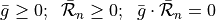
Coulomb friction
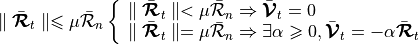